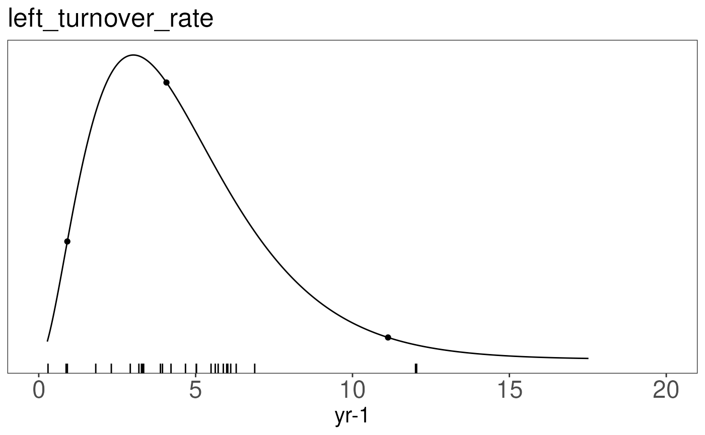

Generating Priors based on Data and / or Expert knowledge
Source:vignettes/priors_demo.Rmd
priors_demo.RmdFitting priors to data (point estimates, all grass species in GLOPNET).
MLE Fit to glopnet Specific Leaf Area data
The PEcAn.priors::fit.dist
helps to choose the best fit parameter distribution given some sample
datasets.


glopnet.grass <- glopnet.data[which(glopnet.data$GF == 'G'), ] # GF = growth form; G=grass
## turnover time (tt)
glopnet.grass$tt <- 12/10^(glopnet.grass$log.LL)
ttdata <- data.frame(tt = glopnet.grass$tt[!is.na(glopnet.grass$tt)])
## specific leaf area
##glopnet.grass$sla <- 1000/ (0.48 * 10^glopnet.grass$log.LMA)
glopnet.grass$sla <- 1000/ (10^glopnet.grass$log.LMA)
sladata <- data.frame(sla = glopnet.grass$sla[!is.na(glopnet.grass$sla)])The fit.dist function takes a vector of point estimates
(in this case 125 observations of Specific Leaf Area from GLOPNET
database are stored in sladata.
First, it prints out the fits of a subset of distributions (the ‘f’ distribution could not be fit). Second, it prints the
## a b AIC
## weibull 2.06 19.000 888.759
## lognormal 2.65 0.677 923.220
## gamma 2.95 0.175 899.403## distribution a b n
## 1 weibull 2.06 19 125
prior.dists <- rbind('SLA' = fit.dist(sladata, dists ),
'leaf_turnover_rate' = fit.dist(ttdata, dists))## a b AIC
## weibull 2.06 19.000 888.759
## lognormal 2.65 0.677 923.220
## gamma 2.95 0.175 899.403
## a b AIC
## weibull 1.83 5.180 187.125
## lognormal 1.35 0.687 195.072
## gamma 2.90 0.630 187.098
slaprior <- with(prior.dists['SLA',], pr.dens(distribution, a, b))
ttprior <- with(prior.dists['leaf_turnover_rate',], pr.dens(distribution, a, b))The priorfig function visualizes the chosen prior
(line), with its mean and 95%CI (dots) as well as the data used to
generate the figure.
prior.figures <- list()
prior.figures[['SLA']] <- priorfig(
priordata = sladata,
priordensity = slaprior,
trait = data.frame(id = "SLA", figid = "SLA", units="1"))
prior.figures[['leaf_turnover_rate']] <- priorfig(
priordata = ttdata,
priordensity = ttprior,
trait = data.frame(id = "leaf_turnover_rate", figid = "left_turnover_rate", units="yr-1"))
prior.figures## $SLA
##
## $leaf_turnover_rate
Fitting priors to data with uncertainty estimates (generating posterior predictive distribution of an unobserved C4 grass species based on values collected from many PFTs.
Classify Wullschleger Data into Functional Types
1. query functional types from BETY
This code is not run here - data are provided in .csv file below. This code requires connection to the BETYdb MySQL server.
wullschleger.species <- vecpaste(unique(wullschleger.data$AcceptedSymbol))
## load functional type data from BETY
con <- function() {query.bety.con(username = "bety", password = "bety",
host = "localhost", dbname = "bety")}
functional.data <- query.bety(paste("select distinct AcceptedSymbol, scientificname, GrowthHabit, Category from species where AcceptedSymbol in (", wullschleger.species, ") and GrowthHabit is not NULL and Category is not NULL;"), con())
write.csv(functional.data, 'inst/extdata/wullschleger_join_usdaplants.csv')Picking up with the Wullschleger dataset joined to USDA Plants functional type classifications …
wullschleger.data <- read.csv(system.file('extdata/wullschleger1993updated.csv', package = 'PEcAn.priors'))
functional.data <- read.csv(system.file('extdata/wullschleger_join_usdaplants.csv', package = 'PEcAn.priors'))
subshrubs <- rownames(wullschleger.data) %in% c(grep('Shrub',wullschleger.data$GrowthHabit), grep('Subshrub', wullschleger.data$GrowthHabit))
########## 2. Merge functional type information into Wullschleger data
wullschleger.data <- merge(wullschleger.data, functional.data, by = 'AcceptedSymbol')
########## 3. Classify by functional type
## grass: any Graminoid Monocot
grass <- with(wullschleger.data, GrowthHabit == 'Graminoid' & Category == 'Monocot')
## forbs/herbs = forb
forb <- with(wullschleger.data, GrowthHabit == 'Forb/herb' | GrowthHabit == 'Vine, Forb/herb')
## woody = Shrubs, Subshrubs or Trees, add category to a few with missing information,
woody <- with(wullschleger.data, scientificname %in% c('Acacia ligulata', 'Acacia mangium', 'Arbutus unedo', 'Eucalyptus pauciflora', 'Malus', 'Salix') | rownames(wullschleger.data) %in% c(grep('Shrub', GrowthHabit), grep('Subshrub', GrowthHabit), grep('Tree', GrowthHabit)))
## gymnosperms
gymnosperm <- wullschleger.data$Category == 'Gymnosperm'
## ambiguous is both woody and herbaceous, will drop
ambiguous <- wullschleger.data$GrowthHabit %in% c("Subshrub, Shrub, Forb/herb, Tree", "Tree, Subshrub, Shrub", "Tree, Shrub, Subshrub, Forb/herb", "Subshrub, Forb/herb")
wullschleger.data$functional.type[grass] <- 1
wullschleger.data$functional.type[forb] <- 3
wullschleger.data$functional.type[woody & !gymnosperm] <- 4
wullschleger.data$functional.type[woody & gymnosperm] <- 5
wullschleger.data <- subset(wullschleger.data, !ambiguous)
############# Estimating SE and n ##################################
##verr, jerr: the "asymptotic" errors for Vcmax, Jmax using SAS nlim
##vucl,vlcl,jlcl,jucl: are upper and lower confidence limits of 95%CI
##Calculate SD as (1/2 the 95%CI)/1.96
wullschleger.data$vsd <- (wullschleger.data$vucl-wullschleger.data$vlcl)/(2*1.96)
##Calculate effective N as (SE/SD)^2 + 1
wullschleger.data$neff <- (wullschleger.data$vse/wullschleger.data$vsd)^2 + 1
wullschleger.data$se <- sqrt(wullschleger.data$vsd*sqrt(wullschleger.data$neff))
## recode species to numeric
species <- unique(wullschleger.data$scientificname)
sp <- rep(NA, nrow(wullschleger.data))
for(i in seq(species)){
sp[wullschleger.data$scientificname == species[i]] <- i
}
############# Scale values to 25C ##################################
wullschleger.data$corrected.vcmax <- PEcAn.utils::arrhenius.scaling(
wullschleger.data$vcmax,
old.temp = wullschleger.data$temp,
new.temp = 25)
############# Create data.frame for JAGS model ##################################
wullschleger.data <- data.frame(Y = wullschleger.data$corrected.vcmax,
obs.prec = 1 / (sqrt(wullschleger.data$neff) * wullschleger.data$se),
sp = sp,
ft = wullschleger.data$functional.type,
n = wullschleger.data$neff)
## Summarize data by species
wullschleger.vcmax <- wullschleger.data %>%
group_by(sp) %>%
summarise(Y = mean(Y),
obs.prec = 1/sqrt(sum((1/obs.prec)^2)),
ft = mean(ft), # identity
n = sum(n)) %>%
dplyr::select(-sp)Add data from C4 species
Few measurements of Vcmax for C4 species were available. ###### Miscanthus: Wang D, Maughan MW, Sun J, Feng X, Miguez FE, Lee DK, Dietze MC, 2011. Impact of canopy nitrogen allocation on growth and photosynthesis of miscanthus (Miscanthus x giganteus). Oecologia, in press
dwang.vcmax <- c(19.73, 40.35, 33.02, 21.28, 31.45, 27.83, 9.69, 15.99, 18.88, 11.45, 15.81, 27.61, 13, 21.25, 22.01, 10.37, 12.37, 22.8, 12.24, 15.85, 21.93, 23.48, 31.51, 23.16, 18.55, 17.06, 20.27, 30.41)
dwang.vcmax <- data.frame(Y = mean(dwang.vcmax),
obs.prec = 1/sd(dwang.vcmax),
ft = 2, #C4 Grass
n = length(dwang.vcmax))Muhlenbergia glomerata
Kubien and Sage 2004. Low-temperature photosynthetic performance of a C4 grass and a co-occurring C3 grass native to high latitudes. Plant, Cell & Environment DOI: 10.1111/j.1365-3040.2004.01196.x
Data from figure 5 in Kubien and Sage (2004), average across plants grown at 14/10 degrees and 26/22 degrees
kubien.vcmax <- data.frame(Y = mean(23.4, 24.8),
obs.prec = 1/sqrt(2.6^2 + 2.5^2),
n = 8,
ft = 2) Zea Mays (Corn)
Massad, Tuzet, Bethenod 2007. The effect of temperature on C4-type leaf photosynthesis parameters. Plant, Cell & Environment 30(9) 1191-1204. DOI: 10.1111/j.1365-3040.2007.01691.x
data from fig 6a
massad.vcmax.data <- data.frame(vcmax = c(17.1, 17.2, 17.6, 18, 18.3, 18.5, 20.4, 22.9, 22.9, 21.9, 21.8, 22.7, 22.3, 25.3, 24.4, 25.5, 25.5, 24.9, 31.2, 30.8, 31.6, 31.7, 32.5, 34.1, 34.2, 33.9, 35.4, 36, 36, 37.5, 38.2, 38.1, 37.4, 37.7, 25.2, 25.5),
temp = c(20.5, 24.6, 21, 19, 21.9, 15, 19.6, 14.3, 20.8, 23.4, 24.8, 25.9, 24.1, 22.8, 27.9, 31.7, 35.5, 39.3, 37.9, 42.4, 41.5, 48.7, 33.3, 33.3, 31.5, 39.1, 38.8, 43.3, 50, 38.4, 35.7, 34.4, 31.9, 33.9, 32.1, 33.7))
massad.vcmax <- with(
massad.vcmax.data,
PEcAn.utils::arrhenius.scaling(
old.temp = temp,
new.temp = 25,
observed.value = vcmax)
)
massad.vcmax <- data.frame(Y = mean(massad.vcmax),
obs.prec = 1/(sd(massad.vcmax)),
n = length(massad.vcmax),
ft = 2)
##### Combine all data sets
all.vcmax.data <- rbind(wullschleger.vcmax,
dwang.vcmax,
## xfeng.vcmax,
kubien.vcmax,
massad.vcmax)take a look at the raw data by functional type:
ggplot(data = all.vcmax.data, aes(factor(ft), Y)) +
geom_boxplot() +
geom_point() +
xlab('Plant Functional Type') +
ylab('Vcmax') +
theme_bw()
Add unobserved C4 species so JAGS calculates posterior predictive distribution
vcmax.data <- rbind(all.vcmax.data,
data.frame(Y = NA, obs.prec = NA, ft = 2, n = 1))Write and Run Meta-analysis
writeLines(con = "vcmax.prior.bug",
text = "model{
for (k in 1:length(Y)){
Y[k] ~ dnorm(beta.ft[ft[k]], tau.y[k])T(0,)
tau.y[k] <- prec.y*n[k]
u1[k] <- n[k]/2
u2[k] <- n[k]/(2*prec.y)
obs.prec[k] ~ dgamma(u1[k], u2[k])
}
for (f in 1:5){
beta.ft[f] ~ dnorm(0, tau.ft)
}
tau.ft ~ dgamma(0.1, 0.1)
prec.y ~ dgamma(0.1, 0.1)
sd.y <- 1 / sqrt(prec.y)
## estimating posterior predictive for new C4 species
pi.pavi <- Y[length(Y)]
diff <- beta.ft[1] - beta.ft[2]
}")
library(rjags)## Loading required package: coda## Linked to JAGS 4.3.2## Loaded modules: basemod,bugs
j.model <- jags.model(file = "vcmax.prior.bug",
data = vcmax.data,
n.adapt = 500,
n.chains = 4,
inits = inits)## Compiling model graph
## Resolving undeclared variables
## Allocating nodes
## Graph information:
## Observed stochastic nodes: 194
## Unobserved stochastic nodes: 9
## Total graph size: 614
##
## Initializing model
mcmc.object <- coda.samples(model = j.model, variable.names = c('pi.pavi', 'beta.ft', 'diff'),
n.iter = iter)
mcmc.o <- window(mcmc.object, start = iter/2, thin = 10)
pi.pavi <- data.frame(vcmax = unlist(mcmc.o[,'pi.pavi']))
vcmax.dist <- fit.dist(pi.pavi, n = sum(!is.na(vcmax.data$Y)))## a b AIC
## weibull 3.54 24.300 14780.8
## lognormal 3.02 0.394 15482.8
## gamma 8.06 0.367 15082.4
prior.dists <- rbind(prior.dists, 'Vcmax' = vcmax.dist)
vcmax.density <- with(vcmax.dist, pr.dens(distribution, a, b), xlim = c(0,50))
######### Vcmax Prior Plot
vcmax.c4 <- all.vcmax.data$ft == 2
vcmax.data <- all.vcmax.data[,c('ft', 'Y')]
vcmax.data$mean <- vcmax.data$Y
vcmax.data$se <- 1/(sqrt(all.vcmax.data$n) * all.vcmax.data$obs.prec)
vcmax.data <- vcmax.data[,c('ft', 'mean', 'se')]
#vcmax.mean <- all.vcmax.data$Y[!c4,]
#vcmax.se <- with(all.vcmax.data[!c4,], 1/(sqrt(n) * obs.prec))#[reorder]
#c4.mean <- all.vcmax.data$Y)[c4]
#c4.se <- with(all.vcmax.data, 1 / (sqrt(n) * obs.prec) )[c4]
prior.figures[['Vcmax']] <- priorfig(priordensity = vcmax.density,
trait = data.frame(id = 'Vcmax', figid = 'Vcmax', units = 'umol CO2 m-2 s-1'),
xlim = range(c(0, max(vcmax.data$mean)))) +
geom_point(data = subset(vcmax.data, ft != 2),
aes(x=mean, y = (sum(vcmax.c4) + 1:sum(!vcmax.c4))/3000), color = 'grey60') +
geom_segment(data = subset(vcmax.data, ft != 2),
aes(x = mean - se, xend = mean + se,
y = (sum(vcmax.c4) + 1:sum(!vcmax.c4))/3000,
yend = (sum(vcmax.c4) + 1:sum(!vcmax.c4))/3000),
color = 'grey60') +
## darker color for C4 grasses
geom_point(data = subset(vcmax.data, ft == 2),
aes(x=mean, y = 1:sum(vcmax.c4)/2000), size = 3) +
geom_segment(data = subset(vcmax.data, ft == 2),
aes(x = mean - se, xend = mean + se,
y = 1:sum(vcmax.c4)/2000, yend = 1:sum(vcmax.c4)/2000))
print(prior.figures[['Vcmax']])## Warning: Removed 1 row containing missing values or values outside the scale range
## (`geom_segment()`).
Fitting priors to expert constraint.
Other Examples / Approaches
Examples
- Estimating priors for the DALEC model in models/dalec/inst/DALEC_priors.R
Package rriskDistributions
The rriskDistributions useful for estimating priors …
as well as individual functions for each distribution such as
get.<somedist>.par that provide nice diagnostic plots
(e.g. compare chosen points to cdf) for example, to compute the
parameters of a Gamma distribution that fits a median of 2.5 and has a
95%CI of [1, 10]:
library(rriskDistributions)
get.gamma.par(p = c(0.025, 0.50, 0.975), q = c(1, 2.5, 10), tol = 0.1)The function fit.pecr provides a GUI to explore the fits
of a range of distributions, e.g.:
produces this: